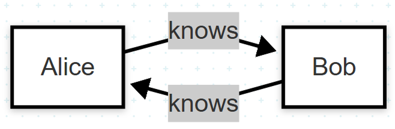

Цель
В условиях активной цифровизации образовательной среды особенно остро встаёт вопрос об удобной навигации в пределах университетского кампуса. Целью данного проекта является разработка решения, которое поможет новоприбывшим студентам быстрее и легче ориентироваться на территории университета с помощью визуализации зданий в цифровой карте 2ГИС.
Ключевые цели включают:
1. Разработка системы 3D-визуализации корпусов университета.
2. Повышение уровня комфорта и адаптации студентов на первых этапах обучения.
3. Создание удобного, современного и доступного интерфейса для ознакомления с кампусом.
4. Формирование базы, пригодной для масштабирования на другие вузы и кампусы.
Актуальность
Множество первокурсников испытывают проблемы с ориентированием в корпусах и аудиториях. Этот проект поможет легче находить нужные аудитории и быстрее до них добираться.
Результат
Виртуализация корпусов Московского Политеха в цифровой карте 2ГИС
Цель
Реализация собственной графовой базы данных в оперативной памяти на основе Dagoba.
Ключевые задачи
1. Изучить принципы графовых баз данных.
2. Реализовать хранение и обработку вершин и рёбер.
3. Добавить механизм выполнения запросов.
4. Реализовать поддержку двунаправленных связей.
Результат
Минимальная in-memory графовая БД с возможностью обхода графа и двунаправленных связей.
Пример использования
g = Graph()
g.add_vertex('Alice', {'name': 'Alice'})
g.add_vertex('Bob', {'name': 'Bob'})
g.add_edge('Alice', 'Bob', 'knows', reverse=True)
print(g.v('Bob').out('knows').run())
Схема: Двунаправленные связи
Файлы проекта
- dagoba.py — логика хранения и обхода
- test_dagoba.py — примеры
- README.md — документация